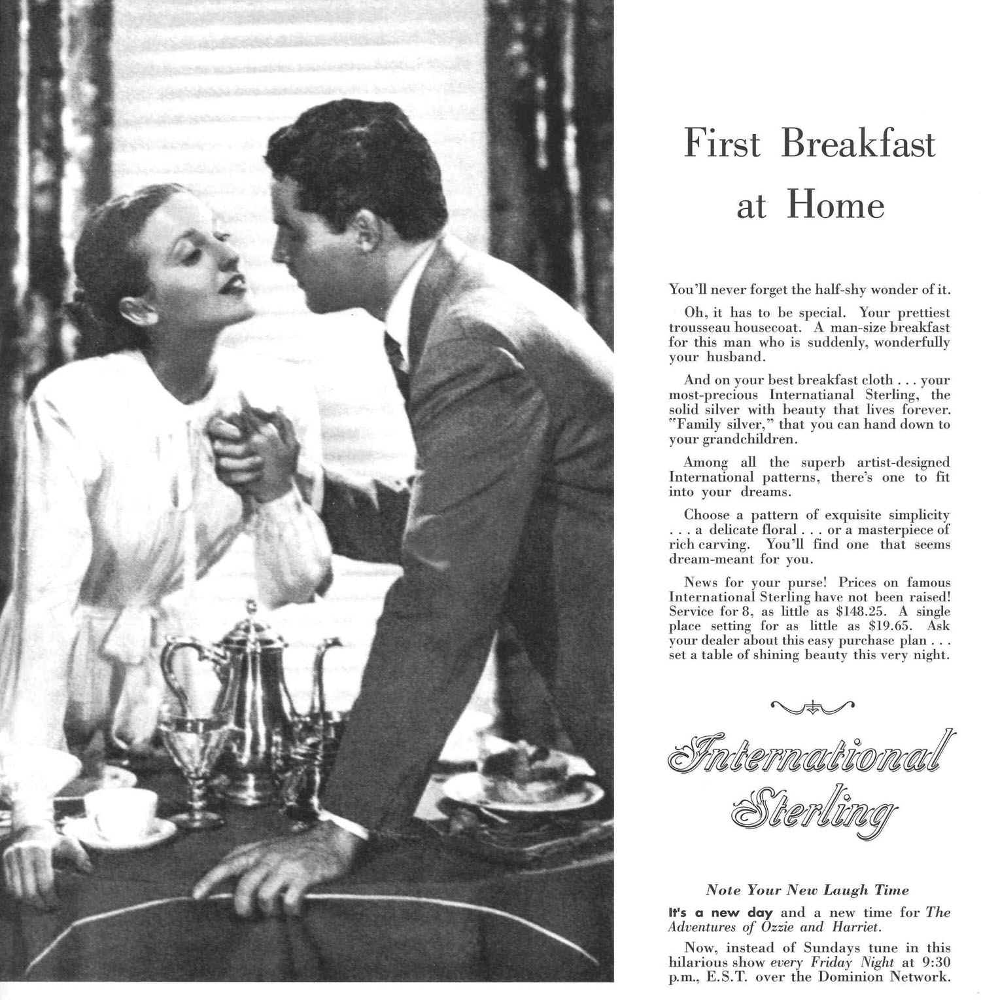

First
Breakfast at Home
This time for keeps? Farewell to the typewriter?
Do many people accept scenes like this as commodity commands?
Home was always like this?
If she has the right brands of goods, life can be beautiful for a lonely suburban housewife?

This ad belongs, perhaps, with another group of ads like "This Time for Keeps," which flash open a set of multiple perspectives on complex family problems and which call for a whole book to provide adequate comment.
The ad offers a view of "One Man's Family." Its object is to present a radiant image of upper-class comfort and commodities suggesting an aristocratic level of leisure and style within the range of a very average pocket. That is the standard come-on, and we are just beginning to appraise its cumulative effect in human terms. It would seem to be a formula inherent in an industrial economy. To create the widest possible market it is not only necessary to produce cheaply, but it is even more necessary to stimulate a constant readiness to discard habits and possessions alike. Market turnover calls for human turnover.
Thus, by endless stress on exclusiveness and fashion, the consumer can be made extremely conscious of the shabby character of the article he bought last year or five years ago. To go on using it in opposition to the new models becomes not just eccentricity but a complex challenge to the consumer community. To be without at least some of the new models marks a man as an economic failure. Or he is niggardly, or he is lacking a decent respect for the opinions of his neighbors.
These consumer pressures in turn affect the entire character of a society. The eye is anxiously turned on the neighbor or friend with a "How do I measure up?" "Do I rate?" This, in turn, brings about a tendency to live not only in terms of present commodities but of future ones. Unrest is present no matter what may be the present house, car, job. Living is done in terms of a future which cannot be seen rather than in terms of present human or material possibilities. And it is not so much that the future is thought of as better but as different. It is not a human future but only the shadow of next year's models.
The present ad pictures a corner of a home as typically presented in the numerous American Home or Better Homes and Gardens productions. These magazines, carefully geared to both the purse and heartstrings of their respective reader groups, feature houses and rooms in which almost nobody ever lives—certainly not the readers. These magazines would be useless commercially if they portrayed any scenes or homes that were already possessed by the income group to which they appeal.
And Hollywood and the star system are more or less consciously geared to the same calculated exaggeration. If the scene is from the village past of the leading character, it must be such a past as never was, but it must be one suited to the present eminence of the star. Excepted from this endless faking of the future and of pasts to fit the unreal present are gangsters and dead-end kids. They are off the consumer track.
An ad like this, then, is a machine for taking spectators for a ride. Our job here is to keep an eye out for the many views which that ride is not intended to reveal to the straphanger.
Marshall McLuhan, The Mechanical Bride